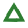
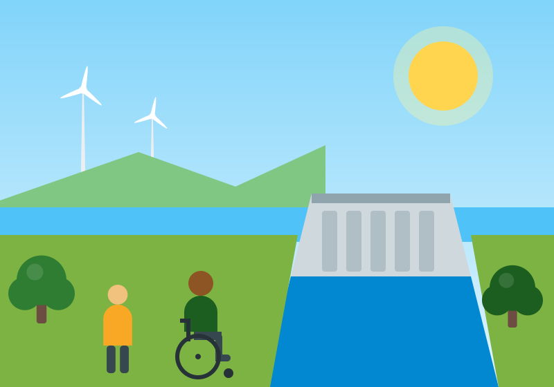
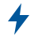

Sustentabilidade
Reciclagem, preservação ambiental e uso racional dos recursos naturais, como a água e a energia, para reduzir o impacto do descarte inadequado de resíduos.
Portal de educação ambiental e inclusão
O EcoVerde conecta a conscientização ambiental – reciclagem, uso racional da água e da energia e fontes renováveis, como a energia gerada pela Usina de Itaipu – à inclusão de Pessoas com Deficiência e à causa do Setembro Verde.

O que nos move
Acreditamos que o desenvolvimento sustentável é indissociável da responsabilidade social e da inclusão plena.

Reciclagem, preservação ambiental e uso racional dos recursos naturais, como a água e a energia, para reduzir o impacto do descarte inadequado de resíduos.

A transição para fontes de energia limpa e renovável, com um estudo de caso educativo sobre a Usina Binacional de Itaipu e seu impacto socioambiental e energético.
O Setembro Verde, a acessibilidade digital e a inclusão de Pessoas com Deficiência (PCD) em todos os âmbitos da sociedade – inclusive na internet.
Navegação rápida
Use os botões “Anterior” e “Próximo”, os indicadores ou as setas do teclado para percorrer os destaques. A rotação automática fica desligada, a menos que você a inicie.

Energia limpa
Entenda como uma usina hidrelétrica gera energia renovável e quais são os seus impactos energéticos e socioambientais.
Ler o estudo de casoEducação ambiental na prática
A conscientização sobre o uso racional da água, da energia e a reciclagem é fundamental para a preservação ambiental.
Feche a torneira enquanto escova os dentes ou ensaboa a louça e procure reaproveitar a água sempre que for seguro.
Apague as luzes ao sair de um ambiente, aproveite a luz natural e desligue da tomada os aparelhos que não estão em uso.
Separe papel, plástico, metal e vidro dos resíduos orgânicos e encaminhe-os para a coleta seletiva da sua região.
Ao produzir conteúdos digitais, descreva imagens, use legendas em vídeos e garanta que tudo funcione pelo teclado.
Inclusão também é sustentabilidade. Conheça a causa, apoie com uma doação ou fale com a equipe do EcoVerde.